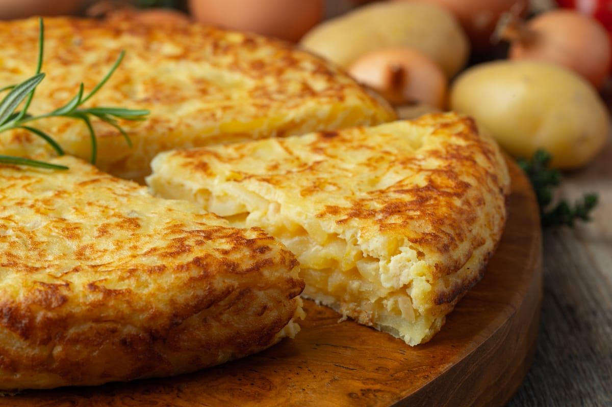

Tortilla de Papas

Tortilla de papas is a traditional Argentinian take on the Spanish potato omelette.
Made with simple ingredients; potatoes, eggs, and onions, it's a comforting and versatile dish
enjoyed hot or cold, often served with bread or as part of a picnic or casual meal.
Ingredients
(4-6 Servings)
- 4 medium potatoes, peeled and thinly sliced
- 1 large onion, thinly sliced
- 6 eggs
- Salt and pepper to taste
- Olive oil (for frying)
Steps
- Heat olive oil in a large skillet over medium heat.
- Add the potatoes and onions. Cook gently, stirring occasionally, until soft but not browned (about 15-20 minutes).
- Remove the potatoes and onions with a slotted spoon and let them drain on paper towels.
- In a large bowl, beat the eggs. Season with salt and pepper.
- Add the cooked potatoes and onions to the eggs. Mix gently to combine.
- Heat a bit of oil in a nonstick skillet over medium heat.
- Pour the mixture into the skillet and cook on one side until mostly set (about 5-7 minutes).
- Carefully flip the tortilla (using a plate or lid to assist) and cook the other side for another 5 minutes.
- Slide onto a plate, let it rest for a few minutes, and serve warm or at room temperature.
Home